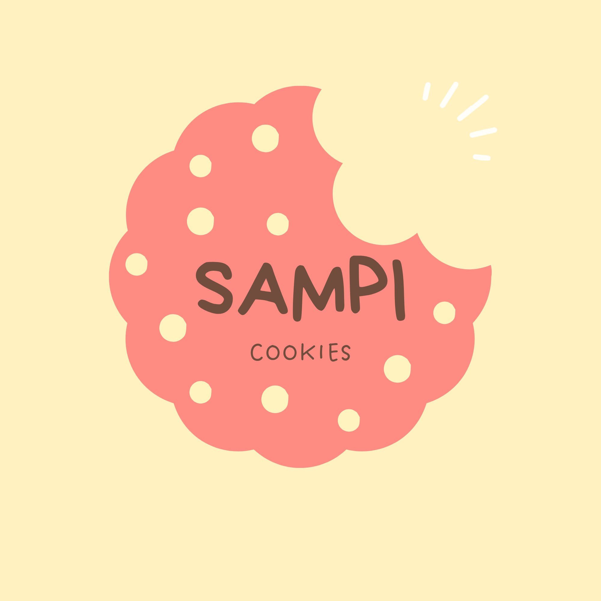

Um carinho em forma de cookie.
BEM-VINDO À SAMPI
Que bom te ver!
Esta área é uma demonstração do projeto acadêmico. Não há cadastro ou autenticação real. Use os dados fictícios abaixo; não informe sua senha pessoal.
Explorar o cardápio
Um carinho em forma de cookie.
BEM-VINDO À SAMPI
Esta área é uma demonstração do projeto acadêmico. Não há cadastro ou autenticação real. Use os dados fictícios abaixo; não informe sua senha pessoal.
Explorar o cardápio